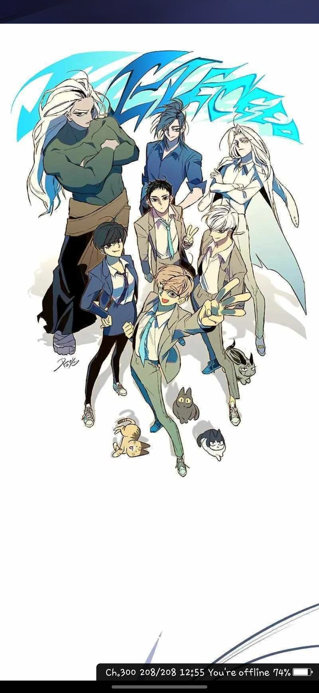
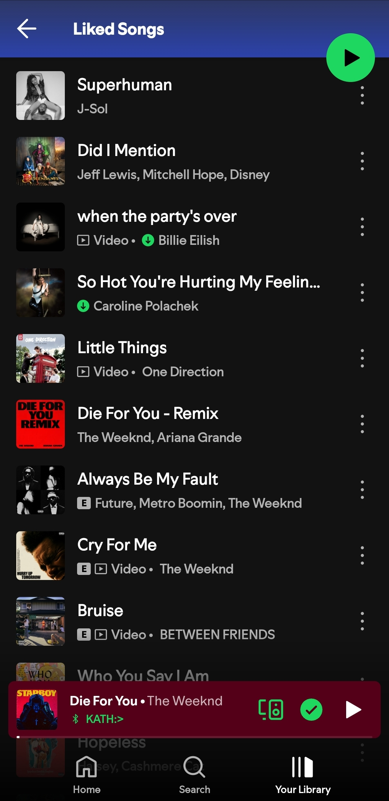
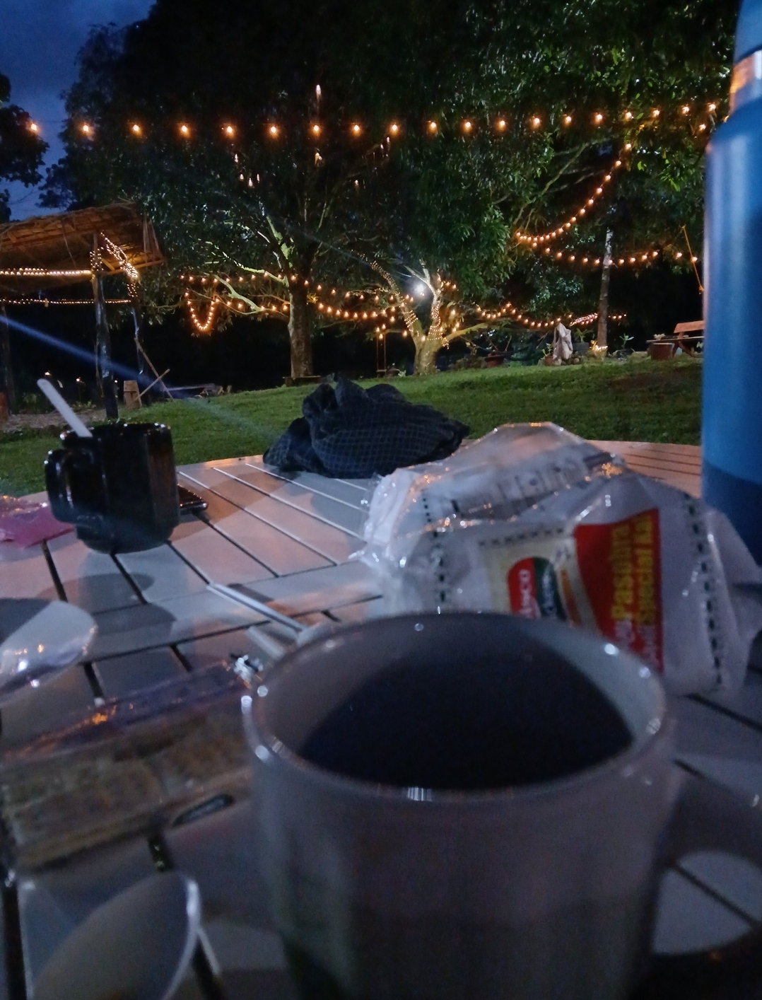
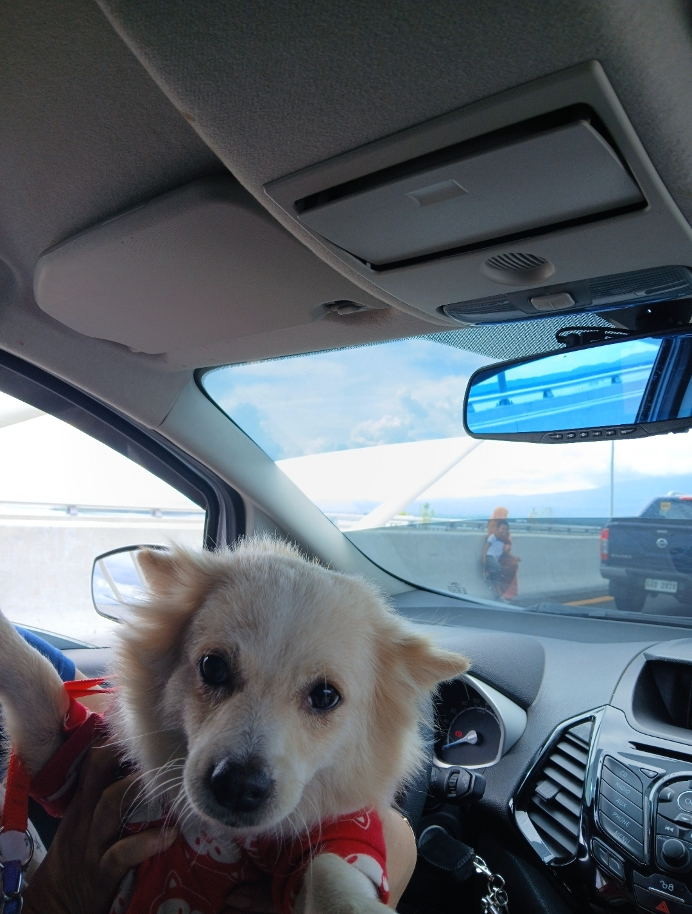

💜 My Interests
📖 Reading Manhwa & Manga
Reading stories with deep emotions brings me comfort.
🶠Exploring Music
Music is my escape; I love discovering new sounds.
☕ Coffee Lover
Nothing beats the comfort of a warm cup of coffee.
💻 Web Development & UI Design
Creating aesthetic websites with smooth animations is my passion.

🕠Dogs
I love dogs and enjoy spending time with them. They bring happiness and warmth to my life. 🐶
